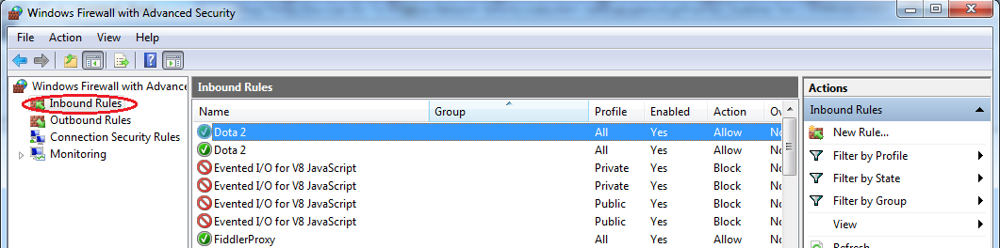
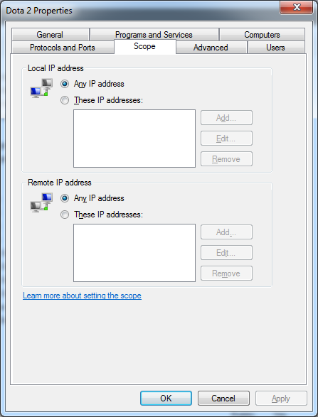
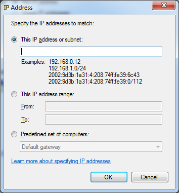
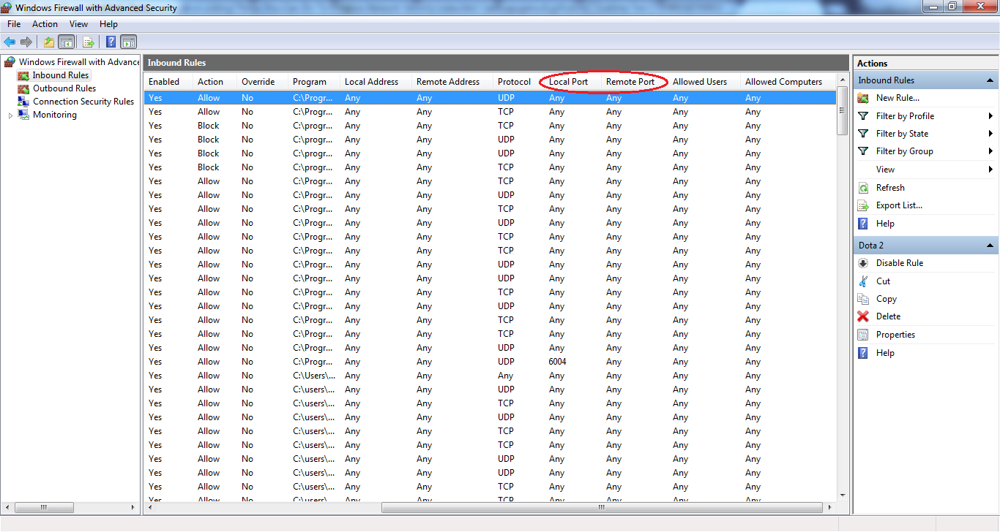
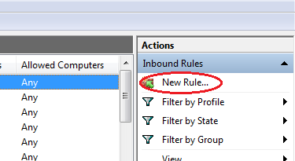
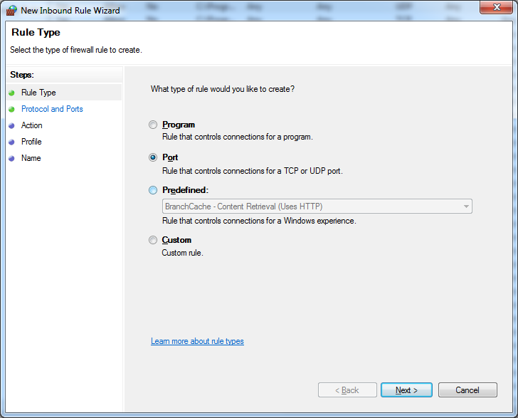

Things You Can Do To Enhance Network Security
If you are required to enhance or 'harden' the security of your network, there are several things you can configure. We may not realize the importance of setting the security properly until something wrong happens. Like the famouse adage says, prevention is better than a cure. Please note that these things are not exhaustive. There may be more things you need to set but these are the things that I did in my project.
- SSL and TLS
It is recommended that we configure all SSL/TLS servers to only use TLS 1.1 or TLS 1.2 with SSL GTM and CTR cipher suites. In addition, the server should enforce clients to use SSL ciphers with at least SHA-256 hashing algorithm for communication. Also, disable SSL cipher suites that are using Diffie-Hellman key exchange (DHE) on the server. Instead enforce the use of SSL cipher suites with Elliptic-Curve Diffie Hellman key exchange (ECDHE) on the server. To achieve this, we can use IISCrypto software here.
Note: Please be extra careful when configuring the TLS/SSL protocols. Be aware of what you are disabling so that you cannot locked out of the VM. Research on what each item in the software is affecting before disabling them. It is better to be safe by clarifying with your supervisor before proceeding to disable some TLS/SSL protocols.
- Custom Error Page
We should create a .html or .aspx static files to handle errors. The main idea here is to hide critical information so that malicious users cannot capture too much information in our error page. You can follow the steps here.
- Server Header HTTP Response
Malicious users can make use of the server information against us. One example is the framework type and version. Since our aim here is to remove any potential information that is potentially dangerous to us, we need to remove it.
To check the header response, we can install browser extension by searching 'HTTP Header Response' in the extension gallery. Click this link to learn how we can configure this.
- Open Ports
We should restrict access to ports that are available as endpoints in the VM to some IP address only. This can be done via firewall rule.
-
From 'Start' , type 'Firewall' and click 'firewall with advanced security'.
-
At the left hand side, click 'Inbound rule' then search for the rule affecting the ports we want to update from the list. Usually you can check from the name on which port the rule is affecting.

-
Double click the rule then go to 'Scope' tab. In this case, let's try to configure the Dota 2 firewall rule. Usually the Remote IP Address is set to 'Any IP Address'.

We would want to restrict it not to all, but only to some IPs. Hence, change the bulleted point to 'These IP addresses' then click 'Add'. Enter the static public IP address that you want the port to be accessed to.

-
It is also important to check whether there is existing firewall rule affecting the ports that you want to control. Most likely these default rule cannot be overridden hence if you create a new rule affecting the same port, it may not have any effect. You can find the existing rule by looking at the 'Local Port' or 'Remote Port' column.

-
If you cannot find any existing rule affecting the port, you would need to create a new rule. On the right, click 'New Rule...'.

-
A new window will pop up and click bulleted point 'Port' instead of 'Program'.

-
Click 'next', enter the specific port you want to control. Next, action would be to 'Allow the connection'. Leave the profile to be all selected. Next give a meaningful name to the rule so that other users can understand what it does/affects, finish!
To configure the new rule that you created, follow step no. 3.
Note: please be careful when you set a firewall rule for access to a remote desktop. Check that you have access to it when changing the scope of the rule. The last thing you want is to be locked out of your own virtual machine.